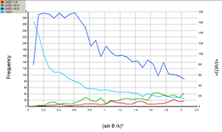

Analyse: Data Quality
Tabbed Initial
Completeness
An almost solid row of green crosses at the top - good sign - high
completeness.
Missing Data: A few low angle reflections missing (probably behind the beam
stop)- Not usually important unless you propose to use SQUEEZE.
If the green crosses fall off at high angle, you can
click on the graph at the theta max at which you believe the data to be
more-or-less complete.
The inset shows data from a poorly diffracting
poly-peptide. The structure was difficult to solve, and refined to a
conventional R=8% with data down to 2 σ.

The bottom figure is from a data set measured to a very high resolution, requiring
two different detector theta setings. Note the 'hole' where the two
settings don't quite overlap.

{kind=link}
Sigma Frequency
There are very few reflections below -2 σ - i.e. no badly negative reflections. From the blue line you can see that about 5400 out of the 7000 reflections have I/σ(I) > 3. The listing file should give the exact figure. 77% of this data is reliably observable. If the figure falls below 50% you can expect problems with structure solution and refinement.

Sigma vs Resolution
The dark blue curve shows that there is a roughly constant amount of
very reliable data throughout the
[sin(theta)/lambda]3. As normal, the weak data (red) is
mostly at high resolution. The pale blue curve is the cumulative sum, and is scaled
to fit the chart (right hand scale). Note that it slowly falls away until a
[sin(theta)/lambda]3 of about 1.0, when it suddenl;y rises
before falling away again. This is the point where the time-per-frame
was increased.
The inset shows the data for a poor crystal. The frequency of good strong
reflections falls away with resolution (dark blue curve). The mean I/sig(I)
falls away rapidly.

Merging R factor
The red histogram shows the Merging R-factor as a function of population
data quality (I/sig(I)). Note that this data set has a quite well defined
upper limit (See Diederichs, K. (2010). Acta Cryst. D66, 733–740.).
The green curve is the number of reflections classed by the intensity and standard
uncertainty of the mean.
setings.
Systematic Absences
If the systematic absences were measured in the same way as the rest of the
data, they throw light on the quality of the accidentally weak reflections.
The systematicaly absent reflections will not be exactly zero because of random
noise, but their average value shold be zero. The distribution of refections in the
upper right and lower left quadrants should be similar. An excess in the upper
right might imply that the weak reflections are being over-estimated, that the
crystal is twinned or that there is substantial λ/2 contamination.
The inset image is from a weakly difracting sample of the same material.
Absences Histogram
In the upper plot, the red histogram shows the number of systemaitic absences
in each interval of Fo. (note that the scale is quadratic). The green line is the
mean intensity in each bin.
The lower plot shows the signal to noise distribution F/σ(F).
The inset image is of the equivalent plots for a weakly diffracting crystal
Wilson Plot
This shows the usual ripple due to repeated molecular motifs. The gradient
gives an estimate of the overall adp, the intercept an estimate of the overall
scale of the data. Note the conventional use of B for the adp.
B=8.pi2U
Low values of MOD[E2-1] (< 0.74) may indicate
twinning.
If the high-rho end of the curve is ragged, or shows an up-turn (due to
systematic over-estimation of weak reflections), a maximum value of rho for the
rest of the analysis can be selected by right-clicking on the appropriate blue
cross. This value can be reset at any time in the REFINEMENT/FILTERING menu. The
LIST 28 check box enables you so see the effect of reflection filters.

Same poor data as described above.
| The accompanying table shows the factor (e-B) by which the trigonometric part of the structure factor is multiplied for a zero'th order reflection. A very small U, (due perhaps to uncorrected absorption) can have a massive effect on the overall scale factor. |
U B EXP(-B) 0.070 5.521 0.00400 0.050 3.944 0.01937 0.030 2.366 0.09383 0.010 0.789 0.45440 0.005 0.394 0.67410 0.000 0.000 1.00000 -0.005 -0.394 1.48347 -0.010 -0.789 2.20068 |
N(z) Distribution
This shows your data (as crosses) compared to thoretical distributions and may help you decide if you data is centrosymmetric or not. Generally not a very reliable test, especially if you have heavy atoms or repeated molecular motifs